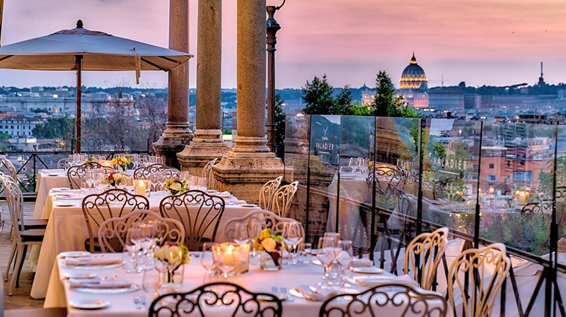

Em uma colina ensolarada da Toscana, cercada por vinhedos e oliveiras centenárias, ficava uma casa de pedra modesta onde nasceu uma tradição. Era ali que Giulia Mancini, mais conhecida como Nonna Giulia, transformava ingredientes simples em refeições inesquecíveis. Não havia receitas escritas. Seus pratos eram transmitidos pelo som da colher na panela, pelo aroma que invadia a casa, pelo gesto amoroso de servir.
Giulia acreditava que cozinhar era um ato de cuidado — quase sagrado. Para ela, um prato de comida era uma carta aberta de afeto, uma forma de dizer "eu me importo" sem usar palavras. Durante a Segunda Guerra Mundial, quando a escassez dominava as mesas, ela ainda encontrava uma maneira de reunir vizinhos em torno de um pedaço de pão com azeite e tomate fresco. Ali nasceu o verdadeiro espírito da cucina povera: fazer muito com pouco, mas com alma.
Décadas depois, seu neto Lorenzo, que cresceu entre panelas de cobre, vinhos envelhecendo na adega e histórias contadas à luz de velas, se mudou para o Brasil. Em meio à saudade da terra natal e das memórias à mesa, sentiu um chamado: resgatar aquele calor que só a cozinha de Nonna sabia oferecer.
Foi assim que nasceu o MammaMia — não apenas um restaurante, mas uma extensão daquela cozinha na Toscana. Um lugar onde cada prato tem uma origem, um afeto, um nome por trás. Onde o molho é feito lentamente, como se o tempo estivesse a nosso favor, e a massa é aberta à mão com respeito à tradição.
No MammaMia, o sabor é uma linguagem. A lasanha não é só comida — é uma lembrança da noite em que Giulia esperou o marido voltar da guerra. O tiramisù, servido com leveza, homenageia o aniversário de 80 anos da matriarca, onde filhos e netos cantaram juntos, abraçados. O pão, quente e simples, é o mesmo que alimentou gerações com dignidade e esperança.
Hoje, cada cliente que se senta à mesa do MammaMia é convidado não apenas a comer, mas a participar de uma história viva. Uma história que começou com mãos enrugadas e olhos gentis, e que continua a cada garfada, a cada brinde, a cada "Mamma mia!" dito com surpresa e prazer.